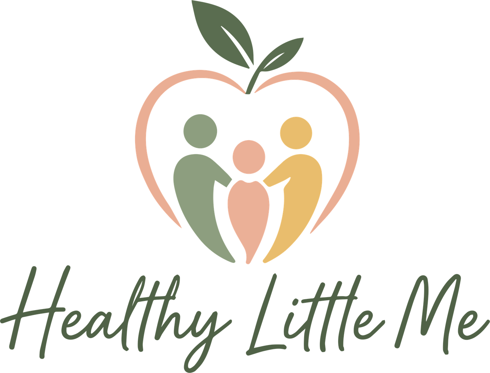

Healthy Little Me
A field guide to how this practice looks, sounds, and feels, for anyone building something for Healthy Little Me, from a social post to a printed intake folder.

Brand Story
Healthy Little Me began with the same observation, repeated across two decades of clinical work: families trying to help a child eat well are so often met with fear, rigid rules, or advice that doesn’t fit their child, their culture, or their kitchen table.
Founder Nisrine Hamad, RD, started her career in Lebanon, studying and completing her residency at the American University of Beirut, working directly with families facing malnutrition and eating disorders. It was there she learned early that clinical expertise means little without trust, patience, and a genuine partnership with the people at home.
She went on to earn a Master’s degree in Pediatric Nutrition and Dietetics from The Ohio State University, then completed advanced clinical training at Nationwide Children’s Hospital, treating children and teens across inpatient and outpatient settings, side by side with therapists and medical teams, on cases ranging from ARFID and tube feeding to complex refeeding.
Healthy Little Me was founded to carry that same caliber of care, pediatric-specialized, evidence-based, and deeply personal, directly into family homes, wherever they are. Practicing exclusively by telehealth removed the two barriers families run into most: geography and the waitlist. What stayed exactly the same is the approach that twenty years of hospital and clinic work proved out: calm, direct, collaborative care that treats parents as partners, not bystanders.
Mission & Vision
Why we’re here
To help children, teens, and their families build a peaceful, confident relationship with food, through compassionate, evidence-based, family-centered nutrition care that’s accessible from anywhere.
Where we’re going
A future where every family, regardless of zip code, insurance network, or waitlist, can reach specialized pediatric nutrition care the moment they need it. Where good health starts within, not with rules, restriction, or a number on a scale.
Accredited Professional
Registered Dietitian credentials, hospital-level training, and 20+ years in pediatric nutrition specifically.
Science-Backed Strategies
Evidence-based, weight-inclusive protocols, never trend diets or one-size-fits-all plans.
Personalized Holistic Approach
Care built around one child and one family at a time, not a generic program.
Brand Positioning
For parents and caregivers of children and teens facing feeding challenges, eating disorders, or complex nutrition needs, Healthy Little Me is the telehealth pediatric nutrition practice that pairs hospital-level clinical expertise with a warm, weight-inclusive, family-first approach, available from anywhere, without the long waitlist.
What sets it apart
Who we speak to
Logo System
The mark is a heart, shaped like an apple, holding three linked figures: a family standing together. It carries every idea the practice is built on, care, nourishment, and the belief that a parent and child move forward side by side, not one guiding the other from a distance.
Horizontal construction
Where a wide, shallow lockup is needed and the wordmark alone reads too quiet, build the icon and wordmark side by side at matching optical heights, separated by one icon-width of space.
Clear Space
Keep an empty margin around the mark at least the height of one figure’s head circle (“x”) on every side. Nothing (text, edges, other logos) enters this space.
Minimum Size
Below these sizes the linework and small type lose their integrity. Switch to the icon mark alone before you go smaller.
digital: 160px wide · print: 1.25in
digital: 32px wide · print: 0.375in
Logo Usage
The mark holds up on a warm, low-contrast palette because it’s used with restraint. Every example below uses the real logo file, nothing here is redrawn.

Color Palette
Every color in the system was pulled directly from the logo file, nothing was invented. Two greens carry most of the weight; blush and honey are warmth, used in smaller doses.
Neutrals
Designed to sit under the palette, warm, never stark white or true black.
Usage ratio
Accessibility
| Pairing | Contrast | Use for |
|---|---|---|
| Warm Charcoal on Cream | 11.9 : 1 | Body copy, small text |
| Fern Sage on Cream | 6.1 : 1 | Headings, UI text, links |
| Cream / White on Fern Sage | 6.1–6.6 : 1 | Reversed headings & buttons |
| Sage Green on Cream | 2.7 : 1 | Large text/graphics only, not small body copy |
| Blush / Honey on Cream | ~1.7 : 1 | Fills, icons, backgrounds, never as text color |
Typography
Three typefaces, three jobs. The script echoes the hand-lettered wordmark and appears sparingly; the sans carries every heading; the mono grounds anything clinical, specs, credentials, data.
One script element per screen or page, maximum. It is a signature, not a headline font.
Keep body paragraphs near 60–70 characters wide for readability, especially in intake and consent copy.
Photography
As a small telehealth practice, imagery is sourced, licensed stock, not an in-house studio. These are the criteria for choosing it well. Tiles below stand in for the mood; they are direction, not final photography.
Look for
- Candid, natural-light moments, not staged studio smiles
- Real body diversity, skin tones, and family structures
- Food shown whole and shared, not measured or plated for a diet
- Parent and child at eye level, engaged with each other
- Muted, warm color grading that sits near the brand palette
Avoid
- Scales, tape measures, or calorie counts as hero imagery
- Before/after or body-transformation framing
- Headless torso or stomach close-up stock shots
- Clinical, sterile, all-white-coat imagery
- Thin-ideal-only bodies, or a single body type throughout
Any image of an identifiable child requires a valid model release. Never use real client photos, confidentiality applies to imagery the same as it does to records.
Illustration Style
Flat, rounded, single-weight line work in brand colors, used for anything photography shouldn’t touch: feeding struggles, body image, or sensitive topics where a real photo could feel clinical or triggering.
Single stroke weight (2–3px at icon scale), rounded caps and joins, no sharp corners, palette colors only, never black outlines.
No calorie/nutrition-label iconography, no “good food / bad food” symbols, no overly cartoonish or medical clip-art styles.
Graphic Elements
A small set of recurring shapes, borrowed straight from the mark, that let a page feel like the brand even with no logo in sight.
A container for a stat, quote, or seasonal callout, used sparingly, never as a photo crop.
Stands in for the three linked figures, a bullet, a loading state, a section break.
Replaces a hard rule between sections on the web and in print.
0 / 8px / 16px / pill, cards use 16px, tags and buttons use pill, data tables stay square.
Photos and avatars crop to a circle or soft blob, echoing the figures’ rounded heads.
Low-opacity background texture for hero sections and print covers, never behind body text.
Brand Voice
Nisrine describes her clinical approach as “calm, direct, and collaborative.” That’s the voice, full stop, on the website, in a caption, in an appointment reminder.
Say it like this
- “Let’s figure out what’s going on together.”
- “A child with ARFID”, person first, condition second
- Plain language, jargon explained the first time it’s used
- Realistic, gradual change over dramatic promises
- Bodies come in different, healthy sizes
Never like this
- “Good foods” vs. “bad foods,” “clean” or “junk”
- “An ARFID kid”, condition-first labeling
- Fear, urgency, or guilt as motivators
- Fast-fix or transformation-style promises
- Weight-loss framing or before/after language
Voice in context
Compassionate pediatric & eating disorder nutrition care, from wherever your family is.
Hi Maria, looking forward to seeing you and Leo Thursday at 2:00 PM. Reply here with any questions before then.
Picky eating isn’t a phase you have to power through alone. Here are three things we ask before we ever change a meal plan. 🧵
This form helps us get to know your family before we meet, there are no wrong answers, and nothing here is graded.
Social Media Direction
Instagram is the primary channel, where parents already look for feeding guidance, with Facebook as a secondary space for community and provider referrals.
Color-blocked template cards in the palette, Poppins headlines, a Caveat quote-card style reserved for one post per week, max.
Collaborative, never salesy, “send this to a parent who needs it” over “book now!!”. No before/after or transformation content, ever.
Digital Applications
How the system holds together across a browser tab, an inbox, and a video call.
Website hero
Warm gradient ground, icon mark small and quiet, one clear action.
Email signature
(614) 404-5920
Icon only, the wordmark is redundant once the name is set in Poppins.
Social avatar
Icon on solid fern, cropped tight with even padding, no wordmark at avatar sizes.
Telehealth virtual background

Healthy Little MeFern gradient, centered mark, nothing else, stays calm behind a video call.
Print Applications
Print is small in this practice, mostly what a referring pediatrician’s office hands a family. Every piece stays legible in black-and-white photocopy, just in case.
healthylittlem@gmail.com
(614) 404-5920
Telehealth · 17 states
Business card, front & back, icon-led front, credential-led back.
Letterhead, icon + wordmark small in the header, never full-size on a page of type.
- Family-based counseling
- Eating disorders & ARFID
- Infant & toddler feeding
- PCOS & diabetes support
Referral rack card for pediatrician & therapist offices.